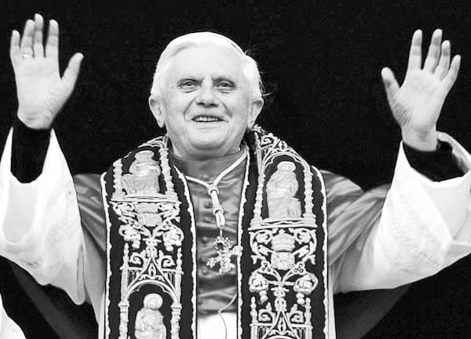

Michael Jackson a fost un zeu potrivit vremurilor noastre infantile, pedofile, efeminate, bi-sexuate, homosexuale, anemice, înrobite chirurgiei siliconului și industriei chimice alimentare, farmaceutice și celei a detergenților bio-activi. „Jacko” a fost un zeu-zombie auto-clonat, precum Elvis a fost unul clasic-Elin (cu toată obezitatea lui din ultimii ani). În vremea lui Elvis (și a Marylenei Monroe) bărbații erau încă bărbați, femeile femei, megastar-urile făceau plajă în priveliștea muritorilor plătitori de impozite, beau Bourbon (whiskey de porumb) și mîncau salată verde în cantități industriale. (A! – zeii din Palm Springs mergeau pe atunci în Cadillac-uri roz și Jaguar-uri argintii, decapotate, nu în negre sarcofage faraonice pe roți.)
Dar să revenim la „cel mai mediatizat eveniment al tuturor timpurilor”, acela care „a umplut de jale o întreagă planetă”, precum am aflat și noi de pe sticla televizoarelor. „Astăzi, pămîntul se va opri pentru o clipă din mișcare!” Acesta a fost anunțul celor care au transmis în direct „ceremonia funerară a megastarului Michael Jackson”. Iar ziarele din întreaga lume scriau: „Jacko a fost cea mai cunoscută persoană din toate timpurile, după Iisus Hristos!” Ziceri nebunești! – va răspunde cineva. Așa este, dar mai mult decît nebunești! Mai întîi – lăsînd la o parte faptul că pămîntul nu s-ar putea opri din mișcare nici dacă i-ar porunci însuși președintele Americii sau papa, avînd în vedere că el (pămîntul) stă nemișcat cum l-a zidit Făcătorul a toate – întîia zicere e înfricoșător de hulitoare. Căci să ne aducem aminte că, la moartea Mîntuitorului, soarele a stat pe cer și luna l-a acoperit, așa încît tot pămîntul a rămas în întuneric vreme de trei ceasuri. La fel de hulitoare este și cea de a doua nebunie, căci nu încape nici o asemuire între vreun om (mai ales între un sub-om, precum a fost „megastarul” nostru) și Dumnezeu-Omul întrupat. Trecînd însă peste aceste hule în sine, să vedem ce înțelesuri ar avea ele.
Abia acum, la moartea lui, unii oameni cît de cît îmbisericiți s-au gîndit la noi că „Jacko” a fost proiectat și „fabricat” ca o preînchipuire a persoanei Antihristului cel mare, a cărei împărățire trebuie gătită din timp (iar acel timp e aproape-aproape, precum încep să simtă pînă și ateii). Căutînd pe Internet, se poate vedea însă că mulți Americani s-au gîndit de mult la asta și chiar au pus întrebarea: Michael Jackson este Antihristul? Să vedem cîteva răspunsuri, unele dintre ele amuzante, dar și pilduitoare:
„Cred – zice un contribuabil American – că este Satan pe pămînt și că toți ne lăsăm prostiți.” „Da, sînt de acord că este și Satan!” – îi răspunde un altul. „Nu este așa – zice un al treilea – fiindcă Antihrist va fi frumos, precum se zice că a fost Satan.” „Antihrist va fi încîntător, MJ este doar prost.”
„Nu este el, căci George W. Bush a ocupat acest post” – se trezește un cetățean mai puțin „teolog”. „Te-ai gîndit că și Obama a făcut asta?” – i se răspunde. Un suflet greu încercat dă însă încheierea: „De ce gîndiți așa? Oricum, vă înșelați. Antihristul este mătușa mea Helen!”
Lăsînd de o parte umorul scrîșnit al acestor nefericiți Americani, care chiar sînt înșelați pururea și necurmat de către sistemul „cel mai bun din lume”, întrebarea dacă MJ este sau nu Antihristul e copilărească, precum și mințile lor. Aceasta îi și învață nebotezații tîlcuitori „Creștini” (cred că Evangheliști). Care, deși nu au adevărul întru ei, văd totuși într-un asemenea om-zeu al show-biz-ului un fel de embrion de Antihrist, dar nicidecum pe Antihrist însuși:
„Cea dintîi Fiară de la Apocalipsa 13 trebuie să fie puternică deopotrivă și spiritual, și politic, căci știm de la Apocalipsa 17:12-18 că zece neamuri vor cădea sub influența geopolitică a acestei Fiarei1. Antihristul va fi un om care-și va căpăta măreția printr-o carieră spiritual-politică, fiind dovedit de o succesiune de semne proorocești trecute, prezente și viitoare suprafirești (vezi la Apocalipsa 13:13-152).
Deși sînt multe personaje celebre cu mare influență socială (Elvis Presley, Michael Jackson), simbolică (prințul Charles, regele Hussein) și chiar spirituală (Dalai Lama, Deepak Chopra), acestea nu au deloc sau prea-puțină influență geopolitică. Pe de altă parte, influența spirituală a conducătorului celei mai mari superputeri a lumii, președintele Bush, cu greu trece de credința lui personală, căci trebuie să respecte principiul separării puterilor în stat. Așa se întîmplă peste tot în lume (inclusiv în statele teocratice islamiste.) Statul Vatican (Sfîntul Scaun) este singura putere politico-religioasă în toată lumea care face din Romano-Catolicism singura religie din lume care să aibă un rol politic în treburile lumești.
De pildă, în timpul pontificatului său, Papa Ioan Paul al II-lea a avut un rol istoric în relațiile politice internaționale: a contribuit la «liberarea» U.R.S.S., a făcut o călătorie istorică de împăcare a Israel-ului cu țările Arabe și a făcut progrese istorice pentru a împăca ostilitatea comunistă a Cubei și Chinei față de catolicism.”
Ce vrea să spună autorul articolului e că Antihristul cel mare nu poate fi nici unul dintre idolii Hollywood-ului (chiar și un alt MJ clonat), nici dintre „stăpînii Universului” de la Casa Albă, ci unul dintre papi. Tîlcuirea aceasta protestantă nu e nouă și se întemeiază pe un fapt bătător la ochi: orice papă Roman eretic zice că e înlocuitorul lui Hristos pe pămînt, adică om-dumnezeu. (Iar după cum am citit în numărul trecut al revistei noastre, a fost un papă care zicea că el e nu numai atît, dar însuși Hristos îmbrăcat în carne!) Cu toate acestea, ereticii Protestanți se înșeală însă, fiindcă Duhul Adevărului nu este întru ei. Căci Antihristul cel mare trebuie să fie – după Sfinții Părinți insuflați de Duhul Sfînt – la început un om „oarecare”, precum a fost și Mîntuitorul Hristos (Care nu era preot – căci nu Se trăgea din Aaron, ci din Iuda și din David – și nici alt fel de conducător) căruia Satana îi va da toată puterea lui, precum citim la Apocalipsa 13:2:
„Și balaurul i-a dat Fiarei puterea lui, și scaunul lui și stăpînire mare.” Stih care se tîlcuiește așa, după Sfîntul Andrei al Neochesariei:
„«Și balaurul i-a dat fiarei puterea sa (…)» Căci Satana, balaurul cel înțelegător, îi va da lui Antihrist toată puterea sa întru semne și minuni mincinoase, spre pieirea celor neîntăriți.”
Iar Sfîntul Ioan Gură de Aur zice:
„Antihristul va fi om oarecare, îmbrăcat cu toată lucrarea satanei: «Și se va arăta omul care se va înălța mai presus de tot ce Se zice sau Se cinstește ca Dumnezeu» (2 Tesaloniceni 2:4). Acela nu va aduce închinăciune de idoli, ci va fi potrivnic lui Dumnezeu, și va surpa toți dumnezeii și va porunci să se închine lui în locul lui Dumnezeu. Și va ședea în biserica lui Dumnezeu, nu numai în cea din Ierusalim, ci și în bisericile cele de pretutindeni.”3
Se poate crede însă că ultimul papă va fi înainte-mergătorul Antihristului celui mare, înainte-mergător despre care citim tot la capitolul 13 al Apocalipsei:
„«Am văzut apoi altă Fiară, ridicîndu-se din pămînt, și avea două coarne asemenea mielului, dar grăia ca un balaur» (stih 11).
Unii înțeleg că «fiara» aceasta este Antihristul. Altora, li se pare că e Satana și socotesc că cele «două coarne» ale lui ar fi ale lui Antihrist și ale unui prooroc mincinos. Iar noi socotim (după Irineu) că, într-adevăr, fiara aceasta de acum va fi un prooroc mincinos, care «va ieși din pămînt», adică din viața cea pămîntească și care se tîrăște pe pămînt. Se zice că va avea «două coarne asemenea cu ale mielului» pentru că, sub piele de oaie, va tăinui sălbăticie de lup ascunsă și mohorîre. Căci la început va arăta un chip de creștinătate. Sfîntul Irineu al Lyonului spune că acesta este sluga ajutătoare lui Antihrist și proorocul lui mincinos, care va primi puterea de a face semne și minuni, înaintea lui Antihrist, gătindu-i acestuia calea cea ducătoare la pieire. Și zice că acesta va grăi «ca un balaur», de vreme ce le va face și le va grăi pe cele ale diavolului celui începător de răutate.
«Și toată stăpînirea celei dintîi fiare o are în mînă, în fața ei. Și face pămîntul și pe locuitorii de pe el să se închine fiarei celei dintîi, a cărei rană de moarte fusese vindecată. Și face semne mari: chiar și foc face să se pogoare din cer pe pămînt, înaintea oamenilor» (stihurile 12, 13).
Acel înainte-mergător al Antihristului, potrivnicul lui Hristos, le va face pe toate prin farmece și năluciri, spre amăgirea oamenilor, ca să li se pară că Antihrist este Dumnezeu, mărturisit fiind de lucrătorul unor astfel de minuni. Acesta îl va urma întru toate pe Ioan Botezătorul, cel care i-a adus la Mîntuitorul pe cei ce au crezut, dar spre înșelarea oamenilor, cărora, deși vor fi în rătăcire, le va spune că urmează adevărului. Căci nu este de mirare de-i va face pe oamenii cei orbiți cu înșelăciunea să vadă pogorîndu-se foc din cer, ca și în istoria lui Iov, cînd s-a pogorît foc și a ars dobitoacele lui după îngăduința lui Dumnezeu și după lucrarea Satanei (Iov 1:16)” (Sfîntul Andrei al Neochesariei).
Deci nici măcar MJ nu putea fi Antihristul cel mare, nici papa, nici măcar vreunul din clanul Bush. Toți sînt doar preînchipuiri ale celor două Fiare. Dar, dacă ne gîndim bine, de ce ar fi fost Michael Jackson preînchipuirea Fiarei ce iese din mare, și nu mai degrabă Ozzy Osborne sau Marilyn Manson, sataniști mărturisiți? Ozzy are chiar un cîntec în care zice „Antichrist s-a întors iarăși!” (ceea ce e o prostie de altfel, căci A. nu a venit încă și nici nu va veni de mai multe ori). (E drept că același Ozzy mai are un cîntec intitulat: „Nu eu sînt Antihristul!” Dar parcă poți să-l crezi?) Sau de ce nu Marilyn Manson, care e poate cea mai înfricoșătoare imitație în piele a diavolului? Ei bine, ei nu pot fi asemuiți cu marele A. tocmai pentru că sînt prea diavolești, iar Antihristul trebuie să fie nu numai om născut din femeie, dar și uman, uman în înțeles umanist, adică satanic. Or tocmai aceasta au încercat inginerii și chirurgii să facă din MJ: un supraom mai uman decît orice om normal, modelul ideal al unei omeniri cu totul îndrăcite. Să ne gîndim ce a ajuns acel oarecare fost negrișor cîrlionțat și cu nas turtit: un androgin (adică o lighioană bărbat-femeie, visul lui Platon, doar că monstrul acestuia era sferic) copilăros și pedofil; cu părul sîrmos, dar întins; un negru decolorat mai mult decît albii; o păpușă vie, așa cum se vede și din dansul pe care l-a născocit.4 Și, mai mult decît orice, un mort ce putrezea pe picioare și încerca să se păstreze nemuritor dormind într-o cameră hiperbarică (marca SECHRIST!) desăvîrșit izolată de lume! Apoi, MJ a fost întruchiparea răutății („I'm bad!”) neserioase, dar și a nevinovăției (curăției) murdare („Dirty Diana”). (Despre MJ ca simbol al „purității” (!) vorbește și presa americană.) Iar Sfinții Părinți proorocesc că Antihristul se va arăta la început blînd și îngăduitor („tolerant”) față de toată lumea. Parcă îl și vedem cîntînd împreună cu un imens cor de copii de toate culorile și orientările sexuale cîntecul lui MJ „Heal the world!” („Vindecați lumea!”)
Da, erau cîteva însușiri care făceau din MJ o parodie de Antihrist, așa cum este și papa Roman și președintele Americii. Lucrul acesta a fost luat în seamă și de autorul cărții Apocalypse Culture, în care se scrie așa:
„Există o putere ce se dă unor oameni, putere care nu e de la Atotputernicul Dumnezeu. De pildă, mulți cred că Michael Jackson este al doilea Christ. Să privim puțin filmul de animație «Captain EO»: «căpitan» este cineva care conduce iar «EO» înseamnă lumină. Deci Michael Jackson îl joacă pe Căpitanul Luminii, și întocmai asta a fost și Satana: un lucifer, un purtător de lumină. Căpitan EO, adică Michael Jackson, are degete din care țîșnește lumină și schimbă lumea de la rău la bine, ceea ce se așteaptă să facă și Messiah.”
Ne vom opri aici, încercînd să-l uităm pe MJ. Mai zicem doar atît: viața și moartea unui „zeu” cîrpit cu silicon nu au nici o însemnătate în sine, dar arată faptul cu adevărat înfricoșător că omenirea, care nu L-a primit încă de la început pe adevăratul Mîntuitor, este acum mai pregătită decît oricînd să-l primească pe Antihrist, pe cel ce va veni „întru numele lui”, după proorocia Dumnezeu-Omului Hristos Însuși:
„Eu am venit întru numele Tatălui Meu, și nu Mă primiți. De va veni cineva întru numele său, pe acela îl veți primi” (Ioan 5:43). Loc care se înțelege așa, după Cuviosul Eftimie Zigadinos:
„«Eu – zice – am venit în numele Tatălui Meu.» Căci pretutindeni Îl laudă pe Tatăl, și de El zice că este trimis, și nimic nu poate să facă de la Sine. (…). «Iar altul va veni întru numele său…» Antihrist adică, care va arăta că el singur este Dumnezeu. Deci pe Mine – zice – Care am venit întru numele Tatălui, adică pe Mine care zic că sînt trimis de la Tatăl, nu Mă primiți. Iar pe acela îl veți primi, care va veni întru numele său, adică singur de sine, ca și cum ar fi Dumnezeu.”

1 „Antihrist nu-și va arăta numaidecît chipul satanic cu cate va stăpîni, ci se va înfățișa ca binefăcător, propovăduitor al păcii, libertății, egalității și fraternității, ca, prin viclenie, să ajungă stăpînitor al întregii lumi. Popoarele vor fi amăgire, se vor lepăda de Hristos, se vor alătura Antihristului și vor preda lui puterea și stăpînirea lor (Apocalipsa 17:13)” (Dimieriu Scarrsiuni).
2 După cum vom arăta, la locul citat nu e vorba despre Antihrist, ci despre Proorocul cel mincinos, înainte-mergător al Antihristului.
3 Avem știre despre o „repetiție” a încoronării Antihristului, care - oricît de caraghioasă ar fi - nu poate să nu ne dea de gîndit:
„Guru Maharaj-ji fost propovăduit «dumnezeu» încă de cînd avea 15 ani, iar familia lui (compusă din mamă și trei frați) era «sfînta familie». Organizația lui, «Misiunea Luminii Divine», avea comunități (ashram-uri) în întreaga Americă. Cei 80.000 de prozeliți ai lui, trebuiau să renunțe la plăcerile lumești și să mediteze în scopul de a obține starea de «conștiință lărgită», care să le aducă pacea desăvîrșită, fericirea și extazul» - adică o stare în care totul în jur este minunat și desăvîrșit întocmai așa cum este. Cu ocazia unei inițieri speciale, în care ei «primesc știința», discipolilor li se arată în lăuntrul lor o lumină foarte puternică. Pe lîngă această «știință», discipolii aceștia mai sînt uniți și în credința că Maharaji-ji este «Stăpînul Universului», care a venit să instaureze Noua Eră («New Age») de pace pentru întreaga omenire. [...] în 1973, «Misiunea Luminii Divine» a închiriat Astrodomul din Houston (o imensă bază sportivă), cu scopul de a organiza acolo «evenimentul cel mai sfînt și mai semnificativ din istoria omenirii», Prozeliți din întreaga lume aveau să vină acolo pentru a se închina zeului lor și pentru a începe convertirea întregii Americi, Apariția lui Maharaj-ji a fost primită cu ovații colosale, în timpul specacolului el stînd pe un tron înalt și avînd pe cap coroana de aur «a lui Krishna». Pe tabelele de afișaj electronic apărea în flașuri cuvîntul «D-U-M-N-E-Z-E-U». Masele de tineri ajunse un paroxism isteric plîngeau de bucurie; numeroase grupuri dansau pe scenă, iar orchestra cînta «The Lord of the Universe» («Stăpînul Universului»), cu textul și muzica adaptate după un imn protestant.
Ceea ce am descris mai sus nu e decît o repetiție a închinării la Antihrist ce va fi la sfîrșitul timpului, de închinare adică la «cel ce se va înălța mai presus de tot ce se numește Dumnezeu, dindu-se pe sine dumnezeu» (2 Tesaloniceni 2:4)" (Cuviosul Setafim Rose).
4 Acel vestit, „Moonwalk” (mersul pe Lună) al lui MJ, de fapt o avansare îndărăt (!), este un lucru drăcesc, ca toate cele făcute de-andoaselea.